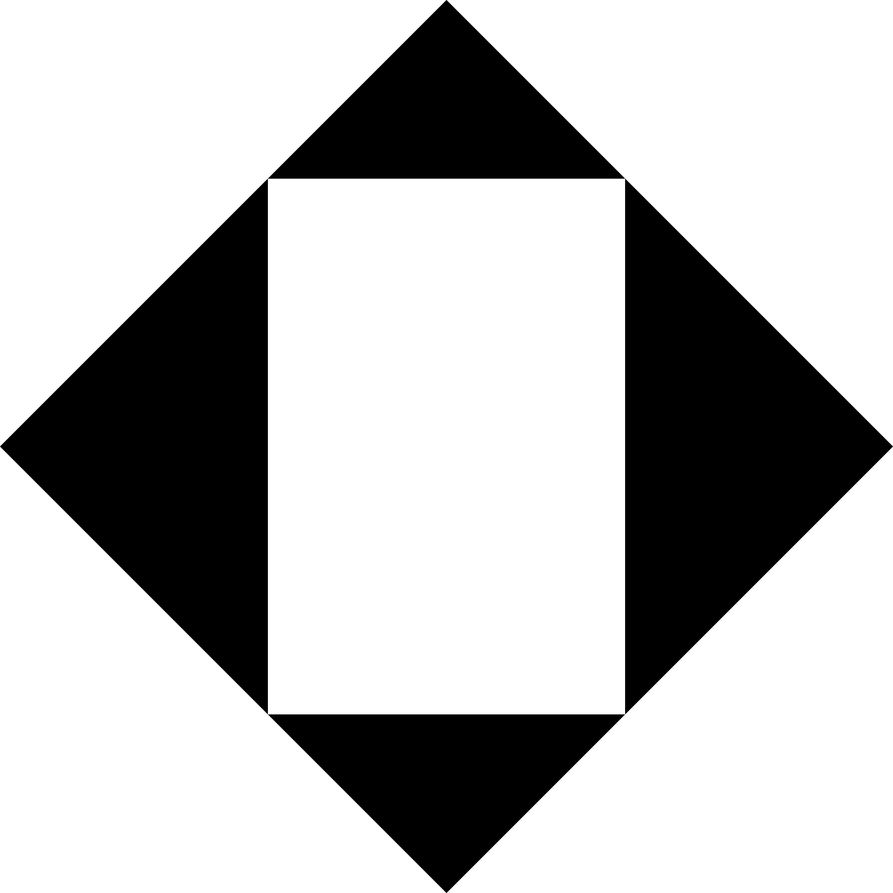
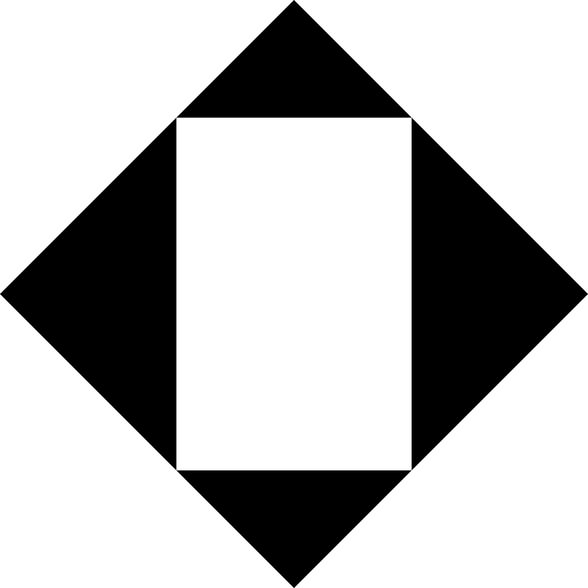

![A view under the stands in the main concourse of the soccer stadium. It is an open space with galvanized steel columns in a grid. Populating the space are various people: One on an upper level that is open to below, and others interacting with large blue and green stained concrete benches and low walls on the first level. There are two large concrete shapes int the background, which are the entrances to the restrooms. The walls of the restrooms, ceiling of the whole space, and the exterior walls beyond are all painted red.](images/perspective_main-concourse.png)

 

The gestalt principle of closure is often illustrated with the diagram on the left. When presented with this image, the human brain sees a square that isn’t there. The brain needs little context to understand a whole. The parti for this soccer stadium (on the right) illustrates a similar idea, but rather than revealing a square from the outside corners in, it is revealed from the inside out.
{kind=link}
{kind=link}
{kind=link}
{kind=link}
The stadium’s exterior walls align with the regulating lines of it’s site, the Milan Innovation District, while the soccer field aligns with FIFA’s solar orientation guidelines creating a misalignment of interior and exterior. The main bowl of the stands is cut off at the corners creating large pyramids of fans reminiscent of the Alps which can be seen from Milan. The slope of the stands is transferred to the facade, creating a downward arrow pointing to entrances at the corners of the field.
The stadium aspires to formal simplicity informed by its context and is decorated with the colors and patterns of the fans who claim it.